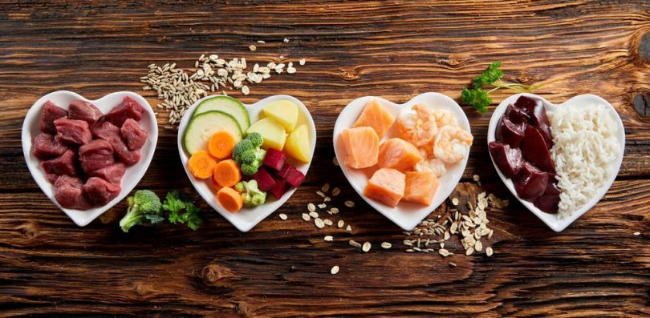

Bem-vindo ao nosso site educacional de nutrição infantil, dedicado a fornecer informações valiosas sobre alimentos saudáveis para nossos pequenos tesouros. Reconhecendo a importância de uma alimentação equilibrada desde cedo, estamos empenhados em promover escolhas alimentares saudáveis que impulsionem o crescimento, desenvolvimento e bem-estar das crianças.
Nossa missão é orientar pais, educadores e cuidadores sobre a importância de oferecer uma variedade de alimentos nutritivos às crianças, estimulando uma relação positiva com a comida desde a primeira infância. Através do conhecimento e da prática de uma alimentação saudável, podemos contribuir para a prevenção de doenças, o fortalecimento do sistema imunológico e o desenvolvimento de hábitos alimentares positivos que irão perdurar por toda a vida.
Nossos especialistas em nutrição infantil recomendam o consumo regular dos seguintes alimentos saudáveis para garantir o bom funcionamento do organismo em crescimento:
Lembre-se de oferecer uma variedade de alimentos saudáveis para garantir a ingestão de todos os nutrientes necessários para o crescimento saudável do seu filho. Além disso, envolva as crianças no processo de escolha e preparo dos alimentos, tornando a experiência alimentar mais razerosa e educativa.
Os alimentos saudáveis são essenciais para o crescimento e desenvolvimento adequado das crianças. Aqui estão algumas opções que você pode incluir na dieta do seu filho:
Lembre-se de oferecer uma variedade de alimentos saudáveis para garantir a ingestão de todos os nutrientes necessários para o crescimento saudável do seu filho.
Experimente estas deliciosas receitas que são saudáveis e atraentes para as crianças:
Essas receitas são apenas sugestões, sinta-se à vontade para adaptá-las de acordo com as preferências e restrições alimentares do seu filho.
* Todas as respostas serão encaminhadas via E-mail *